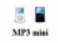

Capacidad de
almacenamiento
(1.000 canciones)
(2.0000 canciones)
(4.000 canciones)
(7.500 canciones)
(20.000 canciones)

rectroiluminacion
rectroiluminacion
carga
alcanzar el 80% de la
capacidad
|  | |||||
Capacidad de almacenamiento |
4GB (1.000 canciones) |
8GB (2.0000 canciones) |
16GB (4.000 canciones) |
30GB (7.500 canciones) |
80GB (20.000 canciones) |
|---|---|---|---|---|---|
| Colores | |
||||
| Pantalla | rectroiluminacion |
rectroiluminacion |
|||
| Tiempo de carga |
|
||||
| Unas 2 horas para alcanzar el 80% de la capacidad |
|||||